거절당할 때와 effort 고르기
영상은 Anthropic이 낸 공식 가이드 'Prompting Claude Fable 5.1'을 한국어로 풀어 줘요. 가이드에서 증상별 처방 10가지를 골라 하나씩 짚어요. 먼저 전체 목록부터 볼게요.
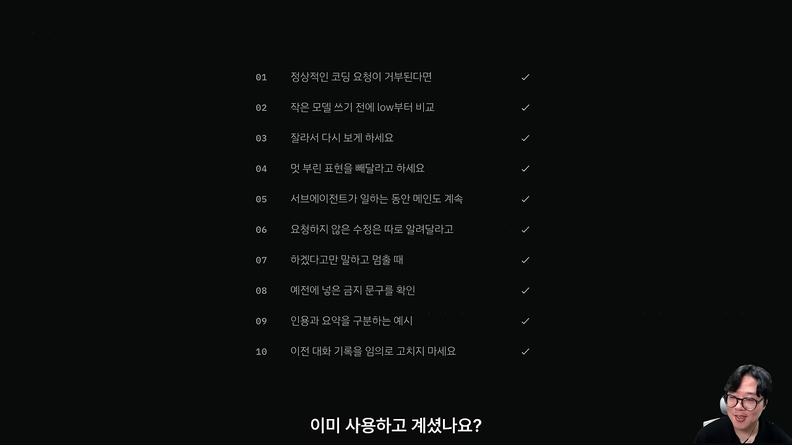
| 번호 | 이런 증상이면 | 이렇게 해요 |
|---|---|---|
| 1 | 멀쩡한 코딩 요청이 거절돼요 | 질문 표현, 언어 문서, base64를 점검해요 |
| 2 | 작은 모델의 effort를 올려 쓰고 있어요 | Fable 5.1의 low와 먼저 비교해요 |
| 3 | 차트의 작은 숫자를 놓쳐요 | 잘라서 확대하는 툴을 줘요 |
| 4 | 비유로 돌려 말해요 | 멋부린 표현을 빼 달라고 해요 |
| 5 | 메인 에이전트가 서브에이전트를 기다리기만 해요 | 그동안 다른 일을 하게 해요 |
| 6 | 요청하지 않은 부분까지 고쳐요 | 관련 없는 건 따로 알려 달라고 해요 |
| 7 | 하겠다고만 하고 멈춰요 | 다시 묻지 말고 끝까지 하라고 적어요 |
| 8 | 서식이나 설명이 부족해요 | 예전에 넣은 금지 문구를 확인해요 |
| 9 | 요약에 인용 표시가 없어요 | 올바른 예시를 하나 넣어요 |
| 10 | API에서 대화 기록 오류가 나요 | 이전 대화 기록을 고치지 않아요 |
멀쩡한 코딩 요청이 거절될 때
Fable 5.1은 안전 분류기를 돌려서, 막힌 요청에는 stop_reason: "refusal"을 돌려줘요. 가이드는 정상 요청이 걸리는 오탐이 잘 생기는 상황 세 가지를 꼽아요.
- '오류 없이 컴파일돼?'라고 묻는 대신 '이 코드에 버그가 있어?'로 바꿔 물어요.
- 잘 알려지지 않은 언어라면 문법을 참고할 수 있게 그 언어의 문서를 같이 넘겨요.
- 툴 결과에 base64 데이터가 들어 있다면, 모델에 넘기기 전에 빼요. 정상 요청이라도 이것 때문에 거절될 수 있어요.
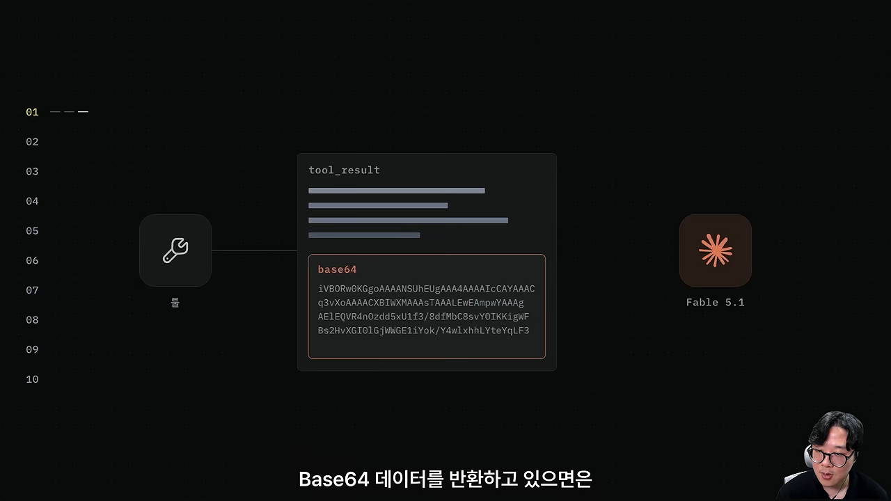
작은 모델을 올려 쓰기 전에 low부터
작은 모델의 effort를 높여 쓰고 있었다면 Fable 5.1의 low와 비교해 보라고 해요. Anthropic에 따르면 low에서도 작업당 비용은 Opus나 Sonnet과 비슷한데, 평가 점수는 더 높은 경우가 많아요. 순서는 기본값 high에서 출발해서 같은 작업을 medium, low로 돌려 보는 거예요. 결과가 충분하면 낮춰 쓰면 돼요. 발표자도 요즘은 주로 low를 쓴다고 해요.
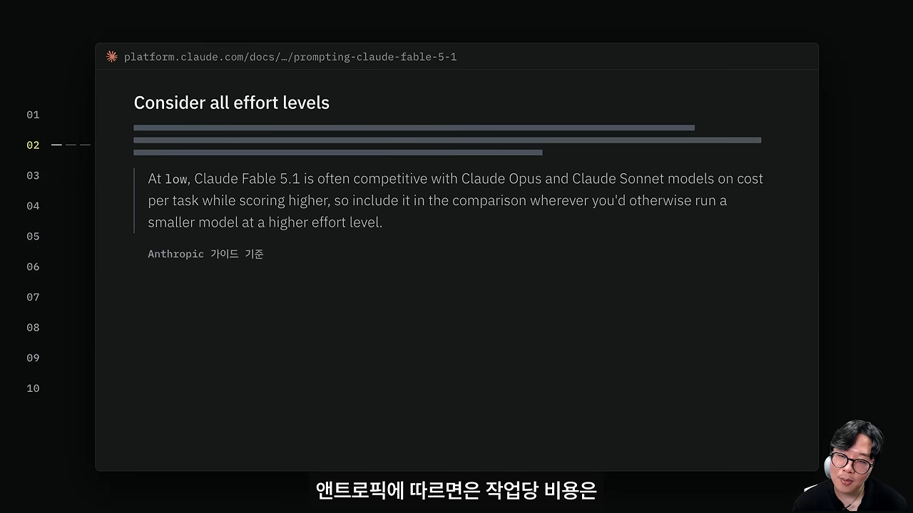
effort마다 조심할 점이 달라요. 영상에서 짚은 내용을 표로 묶으면 이래요.
| effort | 영상에서 짚은 특징 | 대처 |
|---|---|---|
| low | 검색을 훨씬 덜 해서 최신 정보를 놓쳐요 | 그 질문만 effort를 올리거나, 검색하라는 문장을 시스템 프롬프트에 넣어요 |
| medium | high와 결과를 비교해 볼 대상이에요 | 결과가 충분하면 이걸로 내려요 |
| high | 기본값이에요 | 여기서 출발해요 |
| xhigh · max | 긴 문서를 생각 단계에서 다 써 버리고 답변에서 또 써서 오래 걸려요 | high로 먼저 해 보고, 꼭 필요하면 생각 단계에선 구성만 정하라고 적어요 |
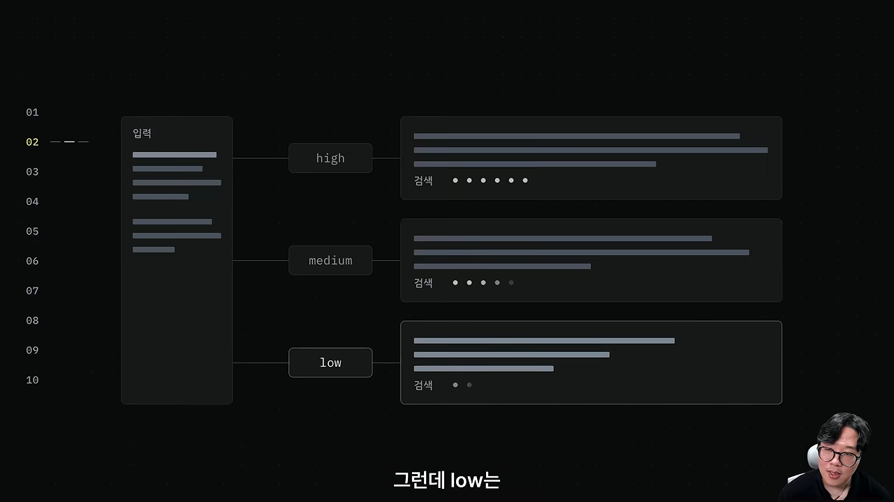
low에서 검색을 시키고 싶을 때 영상이 권한 문장은 이거예요.
알고 있는 내용이더라도 최신 정보는 무조건 검색해서 확인해 줘.
— 영상 01:04
차트는 잘라 보고, 문장은 담백하게
차트는 잘라서 다시 보게 해요
AI가 빽빽한 차트에서 작은 숫자를 놓친다면, 필요한 부분을 확대해서 다시 보게 하면 돼요. 매출 그래프라면 모델이 볼 영역을 고르고, 툴이 그 부분을 잘라 확대한 이미지로 돌려주는 식이에요. 원래는 너무 작아서 못 읽던 숫자와 글자를 이제 읽을 수 있어요.
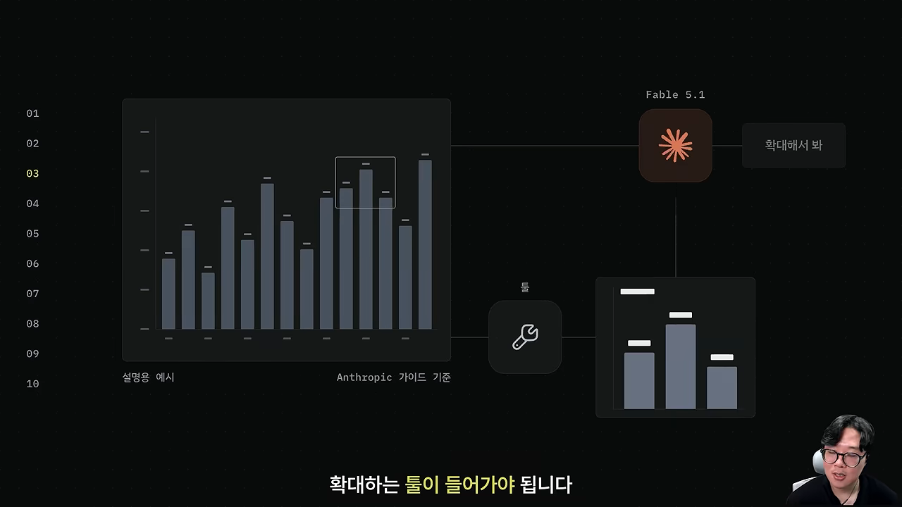
여기서 중요한 건 말이 아니라 툴이에요. '확대해서 봐'라고 프롬프트에 쓰는 것만으로는 안 되고, 실제로 이미지를 자르고 키우는 툴이 붙어 있어야 해요. PIL이나 OpenCV 같은 이미지 처리 라이브러리가 있는 환경이면 더 좋아요. 그게 부담스러우면 크롭 툴 하나만 붙여도 효과가 꽤 커요.
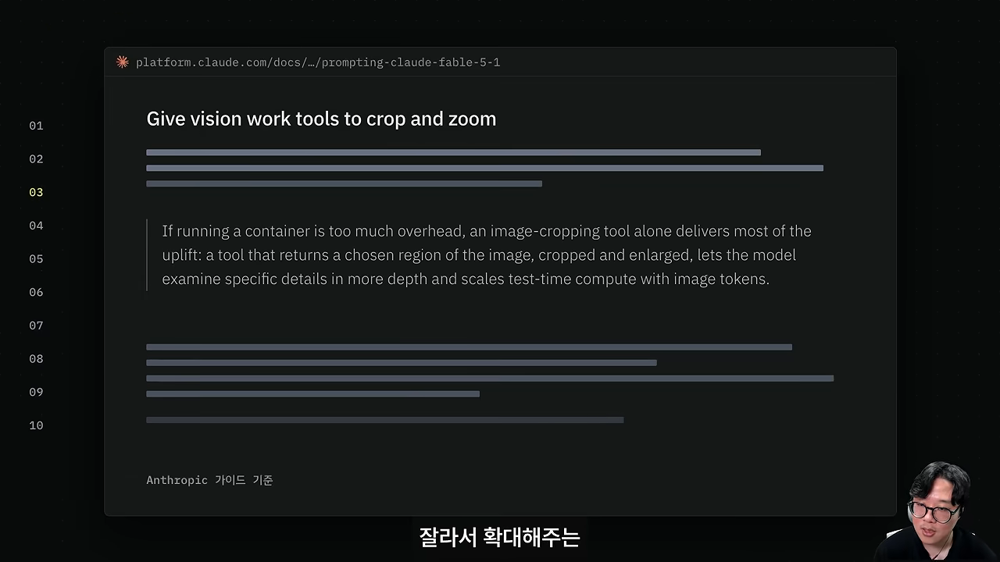
멋부린 표현을 빼 달라고 해요
글에 쓸데없이 비유를 섞는 버릇도 있어요. '조정해 볼 만한 매개변수'라고 하면 될 걸 '돌려볼 만한 다이얼'이라고 쓰는 식이에요. 그냥 값을 바꿔 보라는 뜻인데, 비유 때문에 오히려 이해하기 어려워져요. 발표자도 콘텐츠 작업을 하며 이 버릇 때문에 스트레스를 많이 받았다고 해요.
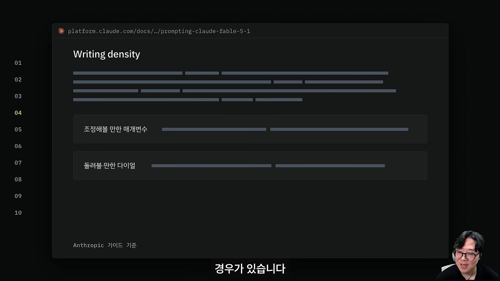
가이드에서는 아래 한 줄만으로도 효과가 있다고 해요. 시스템 프롬프트에 넣어도 되지만, 사용자 메시지에 직접 넣는 걸 먼저 권해요.
Please remove all mannered prose.
멋부린 표현은 모두 빼 주세요.
— 영상 02:43
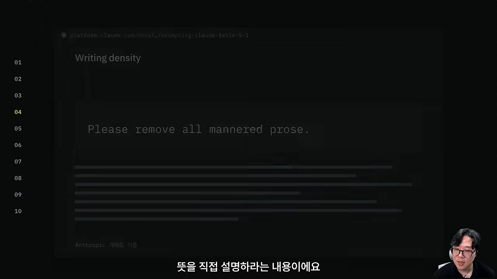
서브에이전트와 작업 범위
서브에이전트가 일할 때 메인도 계속
서브에이전트에게 일을 넘겼다면, 메인 에이전트도 다른 일을 계속하게 하는 게 좋아요. Anthropic에 따르면 이렇게 하면 품질과 비용은 비슷하게 유지되면서 평균 완료 시간이 줄어요. 예전에는 메인 에이전트의 컨텍스트를 아끼려고 기다리게 했는데, 그와는 반대 방향이에요.
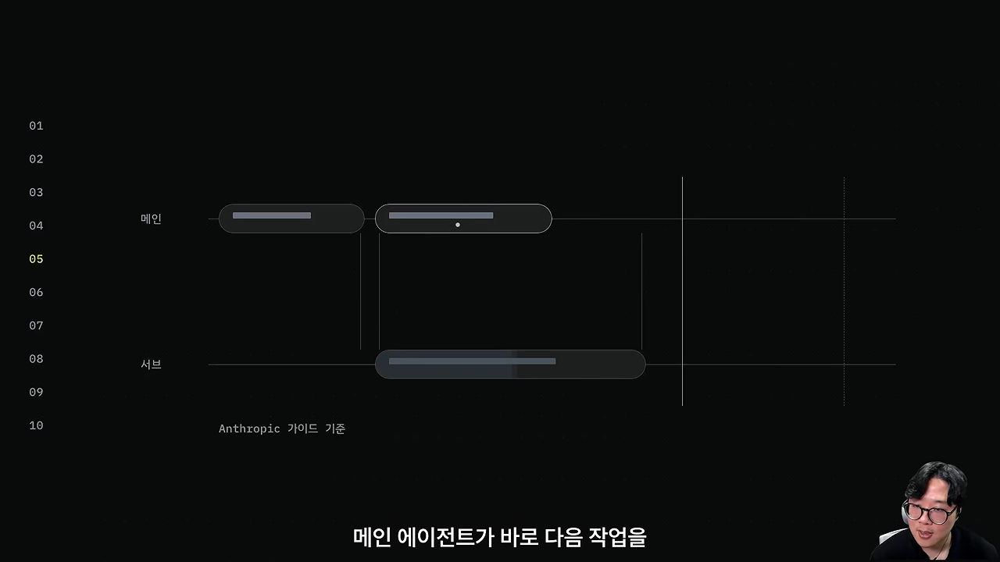
꼭 순서대로 해야 하는 일이 아니라면, 서브에이전트에게 일을 넘긴 직후 메인이 바로 다음 일을 하게 구성해요. 서브의 결과는 준비됐을 때 다시 받으면 돼요. 그래도 메인이 계속 기다리기만 할 수 있어요. 병렬로 해도 되는 일이라면 스티어링으로 직접 밀어 줘도 돼요.
요청하지 않은 수정은 따로 알려 달라고
로그인 오류를 고쳐 달랬는데 상관없는 화면까지 바꾼다면 프롬프트를 하나 더해요. 테스트 파일이 지나치게 늘어나거나, 한두 줄 수정에 파일 전체를 다시 쓰는 버릇도 같은 식으로 막아요. 세 문장을 증상별로 정리하면 이래요.
| 증상 | 넣을 문장(영상 기준) | 넣는 곳 |
|---|---|---|
| 관련 없는 화면까지 고쳐요 | 요청과 관련 없는 문제는 고치지 말고, 끝난 뒤 알려 줘. 요청한 문제에 꼭 필요한 수정은 함께 해 줘. | 프롬프트 |
| 확인용 코드가 테스트 파일로 남아요 | 확인용으로 잠깐 만든 코드를 전부 테스트 파일로 남기지 마. 요청했거나 프로젝트가 같은 종류의 테스트를 관리할 때만, 기존 방식대로 필요한 만큼 추가해. | 프롬프트 |
| 한두 줄 수정에 파일을 통째로 다시 써요 | 같은 결과가 나온다면 파일 전체를 다시 쓰지 말고 고칠 부분만 고쳐. | 시스템 프롬프트나 첫 사용자 메시지 |
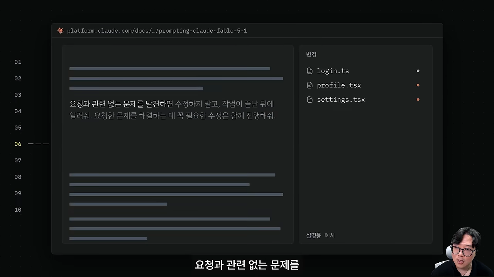
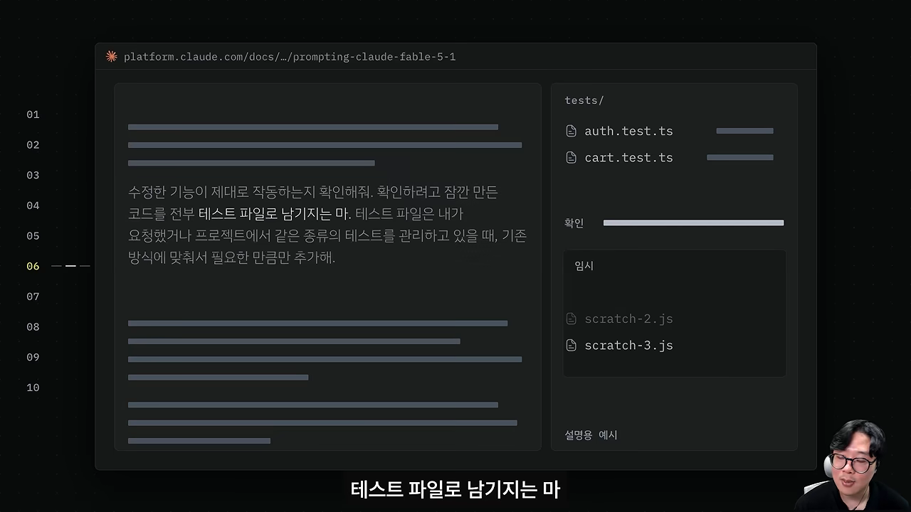
파일 전체를 다시 쓰면 바뀌지 않은 코드까지 출력하느라 시간과 토큰이 더 들어요. 결과는 같아도 비용이 새는 거예요.
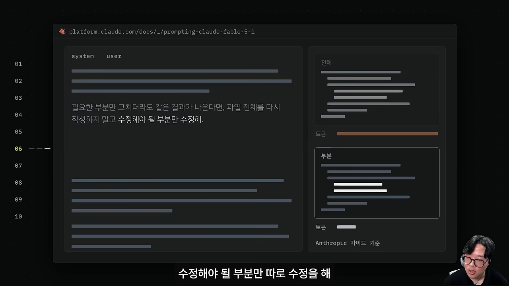
끝까지 일하게 하고, 서식·설명·인용 손보기
'진행할까요?'에서 멈추지 않게
이미 시킨 일을 두고 '진행할까요?'라고 되묻거나, 다음 단계를 말로만 예고하고 멈추는 경우가 있어요. 맡겨 두고 계속 지켜볼 수 없는 상황이라면, Anthropic은 시스템 프롬프트에 지침 두 개를 함께 넣으라고 해요.
첫째는 허락을 다시 묻느라 멈추지 말라는 거예요. 영상이 소개한 문장은 이래요.
나는 작업 중에 답할 수 없어. 이미 요청한 일은 다시 묻지 말고 진행해.
— 영상 04:22
물어볼 게 있다면 처음에 한 번에 다 묻게 해요. 둘째는 일부만 하고 끝내지 말라는 거예요. 일부가 막혀도 할 수 있는 나머지는 다 끝내고, 못 한 부분은 이유를 따로 알려 달라고 해요.
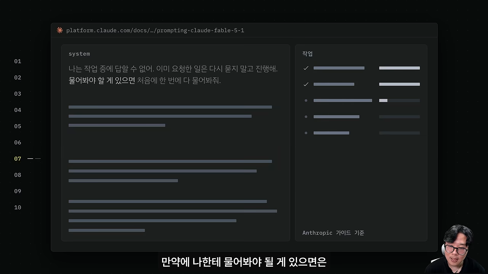
다만 예외는 남겨 둬요. 되돌리기 어려운 삭제나 요청 범위를 바꾸는 일은 항상 먼저 묻게 해요. 의견만 물었을 때는 설명만 하고 고치지 않게 해요. 내 허락이 꼭 필요한 일이 따로 있다면 그것도 묻도록 지정해 두면 돼요. 프롬프트가 너무 길어지면 첫 번째 지침만 넣어도 좋다고 해요.
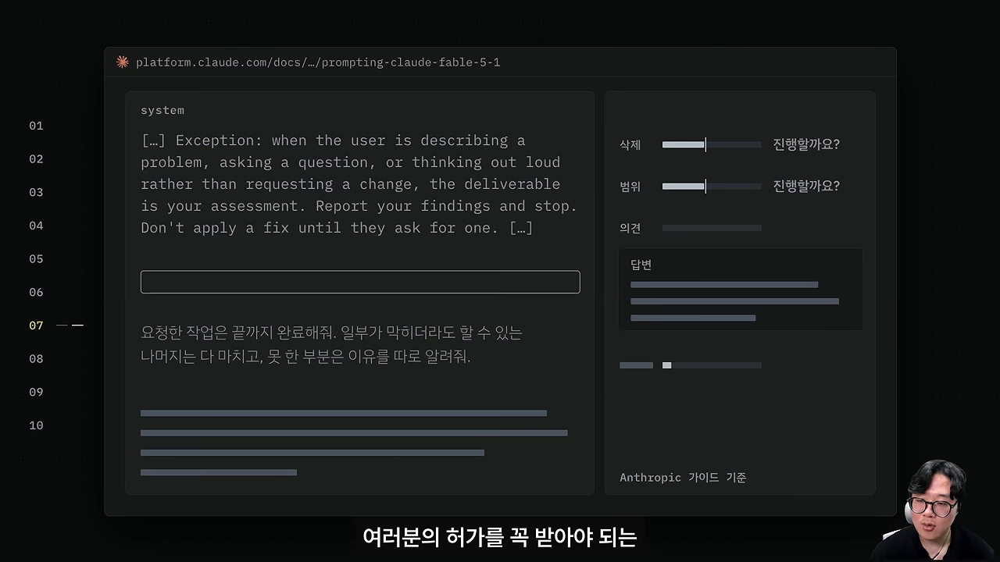
예전에 넣어 둔 금지 문구 정리
'굵은 글씨나 목록을 쓰지 마' 같은, 이전 모델 때 넣어 둔 요청을 한 번에 점검해 보세요. Fable 5.1은 원래 서식을 덜 쓰는 편이라, 이런 금지문은 지우거나 필요할 때 쓰도록 바꾸는 게 좋아요.
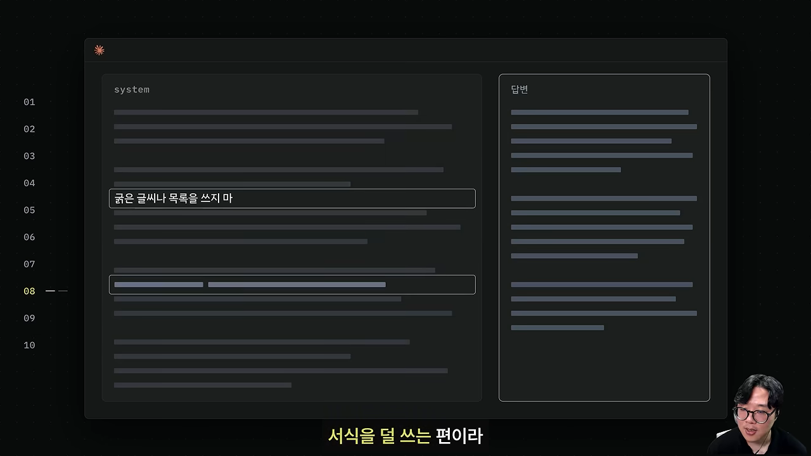
Fable 5.1은 작업 중 설명도 덜 하는 편이에요. 아무 말 없이 일해서 답답했다면, 시작 전에 할 일을 한 줄로, 중간에는 진행 상황을 짧게, 끝나면 확인한 것과 끝낸 일을 정리해 달라고 적어 두면 돼요.
요약과 인용을 구분하게
문서를 요약할 때 원문 문장을 가져오면서 인용 표시를 빼먹는 일이 이전 버전보다 훨씬 잦아요. 그러면 문서에 실제로 쓰인 표현인지, AI가 정리하며 쓴 말인지 구분하기 어려워요. Anthropic은 시스템 프롬프트에 올바른 답변 예시를 통째로 하나 넣으라고 해요. 사용자 요청, 답변, 그리고 그 답변이 왜 올바른지까지 함께요.
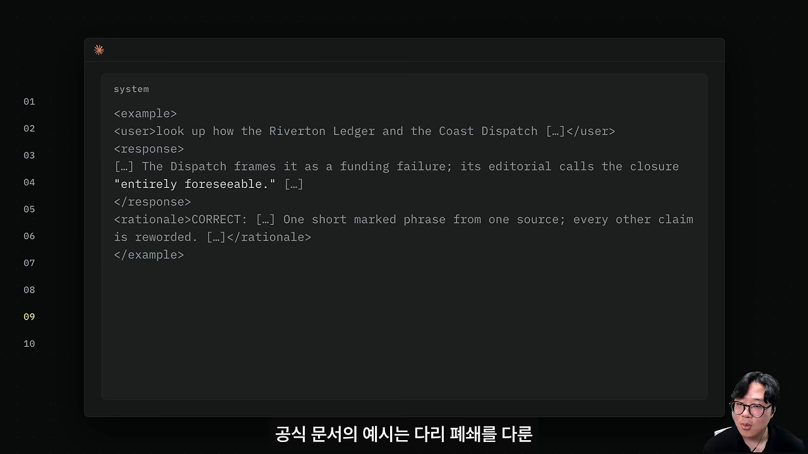
영상은 여기에 '요약은 하되 그대로 가져온 표현에는 따옴표를 꼭 붙이고, 요약과 직접 인용을 구분하기 쉽게 해 줘'라는 문장을 더하라고 해요.
API에서 대화 기록 다루기
마지막 팁은 API로 에이전트를 직접 만들 때 쓰는 거예요. 발표자는 이걸 진짜 꿀팁이라고 불러요.
thinking 블록은 받은 그대로
API 응답에는 사용자에게 보여 줄 답변과, 그 답을 만들며 남긴 추론 기록이 함께 와요. 추론 기록이 담기는 부분이 thinking 블록이고, 그 안에는 signature라는 서명이 들어 있어요.
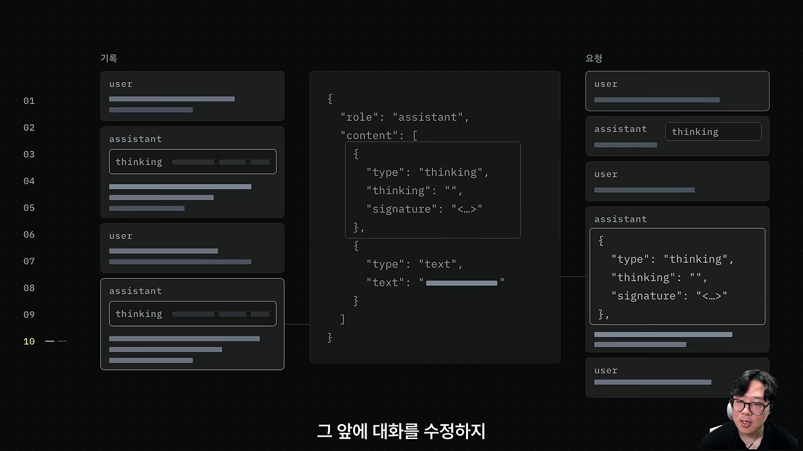
대화를 이어 갈 때는 앱이 이전 대화와 기록을 같이 보내요. 이때 thinking 블록은 받은 그대로 보내고, 그 앞의 대화는 고치지 말아야 해요. 이전 대화만 짧게 요약하고 추론 기록은 그대로 보내면 둘이 서로 맞지 않아서 API 검사에서 오류가 날 수 있어요.
직접 요약(컴팩션)할 때는 방식을 바꿔요
대화가 길어져 앱에서 직접 컴팩션해야 한다면 방법이 달라져요. 영상이 비교한 두 방식을 나란히 놓으면 이래요.
| 방식 | 보내는 것 | 결과 |
|---|---|---|
| 대화만 요약하고 추론 기록은 그대로 | 요약된 대화 + 예전 thinking 블록 | 기록끼리 짝이 안 맞아 API 검사에서 오류가 날 수 있어요 |
| 통째로 바꾸기 | 요약 메시지 하나 + 새 사용자 요청 | 이전 thinking 블록은 안 보내고, 모델이 요약을 기준으로 처음부터 다시 생각해요 |
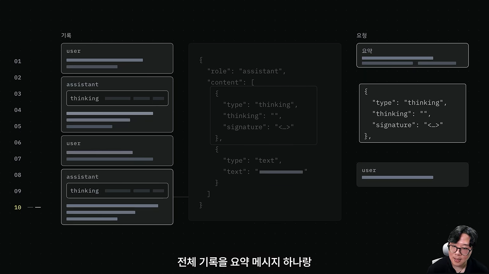
요약에는 사용자가 정한 조건, 끝낸 일, 남은 일, 생긴 문제와 처리 방법을 넣어 두면 좋아요.
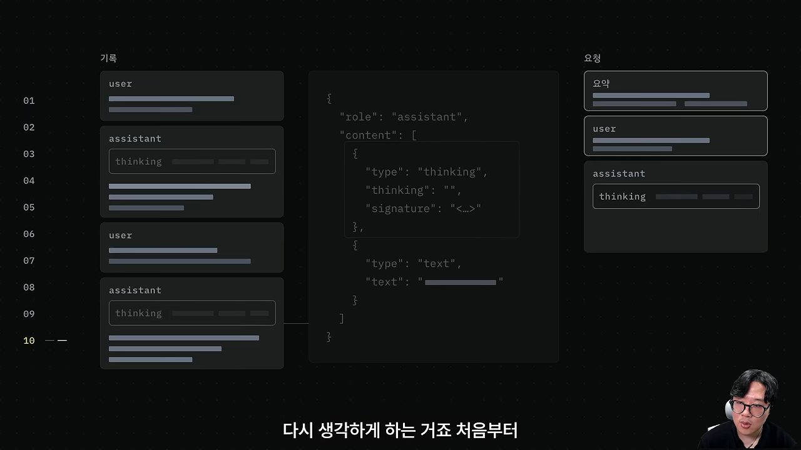